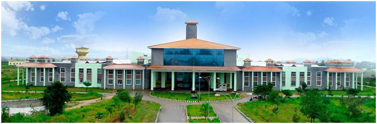

Veterinary College, Shimoga

Shivamogga is endowed with rich natural resources including animal genetic resources, heritage of culture, traditional and social systems and is being considered as lead centre in education activities. Veterinary College, Shivamogga recognized under Veterinary Council of India, New Delhi, was established in the Year 2006 and started functioning in the NSS building of the Sahyadri Science College on 11.09.2006 with initial intake of 27 students (24 boys and 3 girls).
Presently, the College is functioning in the main campus in an area of 172.18 acres at Vinobangara near Sominakoppa, Shivamogga. with well established infrastructure. In this college, adequate measures are taken to assure quality education, as the college is governed by the requirements of Veterinary Council of India and guidelines of the KVAFSU, Bidar.
The mandate of the college is to strive hard and provide leadership in teaching, research and extension education services related to the field of veterinary and animal sciences and to keep pace with new frontiers of science and contemporary developments to be socially and technically relevant . The primary object of this college is to produce qualified and competent Veterinarians who could help in increasing livestock productivity in the state, in particular and in the country, in general. The mission of the college is to strive hard and provide leadership in teaching, research and extension education services related to veterinary and animal sciences. The college is keeping its pace with the new frontier of science and contemporary developments which are socially and technically relevant to the society.
In this context, the faculties are committed in absorbing newer paradigms and using them to develop excellent human resource, innovative technologies and their dissemination so as to serve the mankind through Rural Oriented Farmer Friendly approaches in livestock sector which is the mandate of our University. The College has 46 faculty members specialized in various branches of veterinary and animal sciences and frontier areas. Many of the faculty members have obtained their higher education and training in reputed institutes across India. The lecture halls with facilities of audio-visual systems like overhead projectors, slide projectors and multimedia using computer assisted instructions to impart quality education. In addition, well furnished laboratories have been created with latest need based modern equipments for practical training of students in each discipline.
The College is offering B.V.Sc. & A.H degree programme as per Minimum Standard of Veterinary Education (MSVE) 2008 and 2016 regulations of Veterinary Council of India, New Delhi for the students admitted from the academic year 2009-2010 and 2016-17 onwards respectively. The College is having 17 teaching departments including Veterinary Clinical Complex (VCC) and Livestock Farm Complex (LFC). Master’s degree programme (M.V.Sc) are being offered in 11 disciplines, viz., Veterinary Pharmacology & Toxicology, Veterinary Public Health, Veterinary and Animal Husbandry Extension, Animal Nutrition, Veterinary Pathology, Animal Genetics and Breeding., Veterinary Microbiology, Veterinary Gynaecology & obstetrics, Veterinary Anatomy, Veterinary Parasitology and Veterinary Physiology & Biochemistry.
Besides teaching, the faculty are handling intramural-University funded and extramural- Government /Company funded research projects and are actively involved in offering the extension activities through conduction of seminars, workshops, conferences training programs to the animal husbandry officers, teaching faculty of veterinary filed and the farmers across the state. In addition to the routine teaching and research, the college faculty is actively involved in providing the veterinary treatment, conducting post mortem of wild animals and diagnostic services for the various samples viz: milk/blood/feces etc. received from the farmers, health department, forestry/wild life division. All efforts are in unison in making Veterinary College at Shivamogga as a Centre of Excellence in Teaching, Research and Extension, as well as in Human Resource Development.